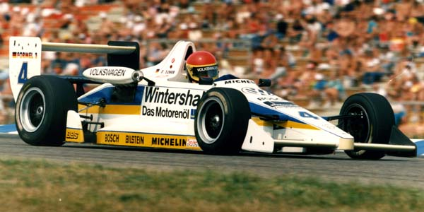
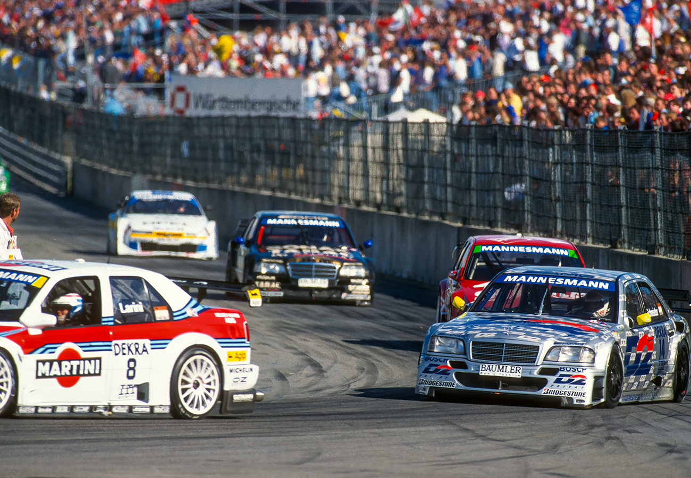

Die Geschichte des MCH
Von den Anfängen im "Deutschen Hof" bis hin zum Arena-Trial - eine Reise durch Jahrzehnte der Leidenschaft für den Motorsport im Hegau und am Bodensee.
1954: Die Gründung
Als Anfang der 50er Jahre das Motorrad als Fahrzeug immer mehr in Gebrauch kam und Fahrten unternommen wurden, traf man dabei landauf, landab auf ebenso begeisterte Motorradfreunde, die sich in Vereinen oder Clubs zusammengeschlossen hatten. Da fassten sich auch in Singen einige Begeisterte ein Herz und gründeten am 29. Januar 1954 in der damaligen Gaststätte "DEUTSCHER HOF" einen Motorsportclub, den sie nach dem Hausberg der Stadt "Hohentwiel" nannten.

Die wilden 60er und 70er Jahre
Ende der 50er-, Anfang der 60er-Jahre machte eine Sportart von sich reden, die heute in unserer Gegend kaum noch ausgetragen wird: das Go-Kart Rennen. Neben Motorrad-Straßenrennen brachten auch Orientierungs- sowie Geschicklichkeitsfahren mit dem Auto großes Interesse am Sportgeschehen.
Mitglieder des MCH stiegen ebenfalls auf Rennmaschinen und stellten mit Toni Schiller einen Deutschen Meister und Vizemeister im Straßenzuverlässigkeitsfahren. Mathias Ehinger wurde Yamaha Cup Sieger. Norbert Rückert, Walter Schoch und Rainer Kuballa waren bei Rennen in Augsburg, Hockenheim oder auf dem Nürburgring immer bei denen dabei, welche den Ton angaben!
Erfolgreich war auch Formel-3-Pilot Heinz Schärle. Er fuhr einen 3. Platz in der Deutschen Formel-3-Meisterschaft im Jahre 1977 heraus. Peter Derber wurde sogar 3-maliger Europameister im Auto-Cross auf einem Porsche Carrera.

1975: Das Aufleben des Trialsports
Im Jahr 1975 waren es Motorsportler wie Gerhard Prutscher, Klaus Moser, Rolf Rossburg und Klaus Jäckle, die den Trial-Sport wieder aufleben ließen. Auch jüngere Nachwuchsfahrer wie Armin und Daniel Prutscher, Heiko Hespeler und Jochen Isak konnten sich für diesen Sport begeistern und diesen auch heute noch aktiv betreiben.
Seit 1988 haben die Trial-Sportler des MCH an ca. 300 Läufen zur Deutschen Meisterschaft und ca. 180 Läufen zur Süddeutschen Meisterschaft mit großem Erfolg teilgenommen.
1979: Der eigene Clubraum & Events
1979 erfüllte sich für den MCH ein lang gehegter Wunsch. In Eigenleistung und mit Eigenmitteln konnten wir einen Clubraum in einem städtischen Gebäude herrichten und ausstatten.
Seit der Gründung des Vereins im Jahr 1954 wurden unzählige Veranstaltungen durchgeführt, darunter viele Fuchsjagden und Bildersuchfahrten. Eine stolze Bilanz unserer bisherigen Ausrichtungen:
- 31 Altersheimausfahrten
- 17 Motorrad Treffen
- 16 Motorrad Trials
- Über 10 Go-Kart Slaloms
- 5 Motorsport Ausstellungen
- 4 Fahrrad Trials
- 3 Brems- und Beschleunigungsprüfungen
- 2 Go-Kart Rennen
Die Ära des Alemannenrings & der DTM
Als vorläufiger Höhepunkt in der Vereinsgeschichte folgten in den Jahren 1980 und 1981 zwei Straßenrennen um die Deutsche Motorrad-Meisterschaft, welche im Singener Industriegebiet stattfanden (der spätere Alemannenring).
In den Jahren 1990 bis 1997 betreute der MCH Singen zudem die DTM und STW Läufe in Singen und Lahr als professionelles Boxenpersonal.

1996 bis Heute: Kartsport & Arena-Trial
1996 wurde eine Jedermann-Kart-Gruppe ins Leben gerufen, die bereits im darauf folgenden Jahr Meisterschaftsstatus erhielt und bis heute mit großem Erfolg an den Läufen um den Bodensee-Kart-Cup (BKC) nimmt.
Um an alte sportliche Traditionen anzuknüpfen, hat der Verein mit dem Arena-Trial im Jahre 2008 im Hardtstadion des ESV Südstern Singen einen weiteren spektakulären Höhepunkt in der jüngeren Vereinsgeschichte geschaffen.